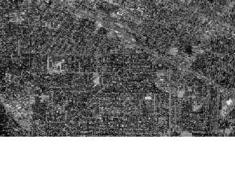

KML - Keyhole Markup Language¶
Keyhole Markup Language (KML) is an XML-based language for managing the display of 3D geospatial data. KML is a standard maintained by the Open Geospatial Consortium (OGC).
Data Access / Connection Method¶
KML access in MapServer is available through OGR. See the OGR driver page for specific driver information. Read support was initially added to GDAL/OGR version 1.5.0. A more complete KML reader was added to GDAL/OGR in version 1.8.0, through the libKML driver (including the ability to read multigeometry, and KMZ files).
The CONNECTION parameter must include the kml or kmz extension, and the DATA parameter should be the name of the layer.
CONNECTIONTYPE OGR
CONNECTION "filename.kml"
DATA "layername"
Example 1: Displaying a .KML file¶
OGRINFO¶
First you should make sure that your GDAL/OGR build contains the “KML” driver, by using the ‘–formats’ command:
>ogrinfo --formats
Loaded OGR Format Drivers:
...
-> "GML" (read/write)
-> "GPX" (read/write)
-> "KML" (read/write)
...
If you don’t have the driver, you might want to try the FWTools or MS4W packages, which include the driver.
Once you have the KML driver you are ready to try an ogrinfo command on your file to get a list of available layers:
>ogrinfo myplaces.kml
INFO: Open of `myplaces.kml'
using driver `KML' successful.
1: Layer #0 (Point)
Now use ogrinfo to get information on the structure of the layer:
>ogrinfo fountains-hotel.kml "Layer #0" -summary
Had to open data source read-only.
INFO: Open of `fountains-hotel.kml'
using driver `KML' successful.
Layer name: Layer #0
Geometry: Point
Feature Count: 1
Extent: (18.424930, -33.919627) - (18.424930, -33.919627)
Layer SRS WKT:
GEOGCS["WGS 84",
DATUM["WGS_1984",
SPHEROID["WGS 84",6378137,298.257223563,
AUTHORITY["EPSG","7030"]],
AUTHORITY["EPSG","6326"]],
PRIMEM["Greenwich",0,
AUTHORITY["EPSG","8901"]],
UNIT["degree",0.01745329251994328,
AUTHORITY["EPSG","9122"]],
AUTHORITY["EPSG","4326"]]
Name: String (0.0)
Description: String (0.0)
Mapfile Example¶
LAYER
NAME "kml_example"
TYPE POINT
STATUS DEFAULT
CONNECTIONTYPE OGR
CONNECTION "kml/fountains-hotel.kml"
DATA "Layer #0"
LABELITEM "NAME"
CLASS
NAME "My Places"
STYLE
COLOR 250 0 0
OUTLINECOLOR 255 255 255
SYMBOL 'circle'
SIZE 6
END
LABEL
SIZE TINY
COLOR 0 0 0
OUTLINECOLOR 255 255 255
POSITION AUTO
END
END
END
Example 2: Displaying a .KMZ file¶
OGRINFO¶
First you should make sure that your GDAL/OGR build contains the “LIBKML” driver, by using the ‘–formats’ command:
>ogrinfo --formats
Loaded OGR Format Drivers:
...
-> "GML" (read/write)
-> "GPX" (read/write)
-> "LIBKML" (read/write)
-> "KML" (read/write)
...
If you don’t have the driver, you might want to try the FWTools or MS4W packages, which include the driver. Or you can follow the Building from source for libKML and GDAL/OGR.
Once you have the LIBKML driver you are ready to try an ogrinfo command on your file to get a list of available layers:
>ogrinfo Lunenburg_Municipality.kmz
INFO: Open of `Lunenburg_Municipality.kmz'
using driver `LIBKML' successful.
1: Lunenburg_Municipality
Now use ogrinfo to get information on the structure of the layer:
>ogrinfo Lunenburg_Municipality.kmz Lunenburg_Municipality -summary
INFO: Open of `Lunenburg_Municipality.kmz'
using driver `LIBKML' successful.
Layer name: Lunenburg_Municipality
Geometry: Unknown (any)
Feature Count: 1
Extent: (-64.946433, 44.133207) - (-64.230281, 44.735125)
Layer SRS WKT:
GEOGCS["WGS 84",
DATUM["WGS_1984",
SPHEROID["WGS 84",6378137,298.257223563,
AUTHORITY["EPSG","7030"]],
TOWGS84[0,0,0,0,0,0,0],
AUTHORITY["EPSG","6326"]],
PRIMEM["Greenwich",0,
AUTHORITY["EPSG","8901"]],
UNIT["degree",0.0174532925199433,
AUTHORITY["EPSG","9108"]],
AUTHORITY["EPSG","4326"]]
Name: String (0.0)
description: String (0.0)
timestamp: DateTime (0.0)
begin: DateTime (0.0)
end: DateTime (0.0)
altitudeMode: String (0.0)
tessellate: Integer (0.0)
extrude: Integer (0.0)
visibility: Integer (0.0)
Mapfile Example¶
LAYER
NAME "lunenburg"
TYPE POLYGON
STATUS DEFAULT
CONNECTIONTYPE OGR
CONNECTION "Lunenburg_Municipality.kmz"
DATA "Lunenburg_Municipality"
CLASS
NAME "Lunenburg"
STYLE
COLOR 244 244 16
OUTLINECOLOR 199 199 199
END
END
END # layer
Example 3: Displaying a “Superoverlay” KML file¶
A superoverlay is a KML file that contains tiled data, that is broken up into “regions”; this is an efficient way to display large images. For more background on superoverlays see the Google Developers KML Tutorial.
MapServer can access superoverlays through GDAL.
Note
The following was tested with GDAL 2.0.2-dev on 2016-01-17; several enhancements to GDAL were made when testing this superoverlay (see tickets 6310 and 6311).
GDALINFO¶
First you should make sure that your GDAL/OGR build contains the “KMLSUPEROVERLAY” driver, by using the ‘–formats’ command:
>gdalinfo --formats
Supported Formats:
...
R -raster- (rwv): R Object Data Store
MAP -raster- (rov): OziExplorer .MAP
KMLSUPEROVERLAY -raster- (rwv): Kml Super Overlay
PDF -raster,vector- (rw+vs): Geospatial PDF
...
If you don’t have the driver, you might want to check if your platform has a ready-to-use package/installer (Windows users please see MS4W), which include the driver.
Note
For this example, we will use the remote KML file referenced in the Google Developers Tutorial (http://mw1.google.com/mw-earth-vectordb/kml-samples/mv-doqq.kml). We will also access this remote file directly through vsicurl, which has been available in GDAL since 1.8.0
Now use gdalinfo to get information on the structure of the layer:
>gdalinfo /vsicurl/http://mw1.google.com/mw-earth-vectordb/kml-samples/mv-doqq.kml
Driver: KMLSUPEROVERLAY/Kml Super Overlay
Files: none associated
Size is 16384, 16384
Coordinate System is:
GEOGCS["WGS 84",
DATUM["WGS_1984",
SPHEROID["WGS 84",6378137,298.257223563,
AUTHORITY["EPSG","7030"]],
AUTHORITY["EPSG","6326"]],
PRIMEM["Greenwich",0,
AUTHORITY["EPSG","8901"]],
UNIT["degree",0.0174532925199433,
AUTHORITY["EPSG","9122"]],
AUTHORITY["EPSG","4326"]]
Origin = (-122.129312658577720,37.439803353779496)
Pixel Size = (0.000004270647777,-0.000004095141704)
Metadata:
DESCRIPTION=The original is a 7008 x 6720 DOQQ of Mountain View in 1991. (Source:
http://gis.ca.gov/). This is a Region NetworkLink hierarchy of 900+
GroundOverlays each of 256 x 256 pixels arranged in a hierarchy such
that more detailed images are loaded and shown as the viewpoint nears.
Enable the "Boxes" NetworkLink to see a LineString for
each Region. Tour the "Boxes" to visit each tile. Visit the
"A" and "B" Placemarks to see multiple levels of
hierarchy together. Use the slider on various images in the hierarchy
to see how the resolution varies and of the entire hierarchy to see
the imagery below. (Find the Google Campus...).
NAME=SuperOverlay: MV DOQQ
Image Structure Metadata:
INTERLEAVE=PIXEL
Corner Coordinates:
Upper Left (-122.1293127, 37.4398034) (122d 7'45.53"W, 37d26'23.29"N)
Lower Left (-122.1293127, 37.3727086) (122d 7'45.53"W, 37d22'21.75"N)
Upper Right (-122.0593424, 37.4398034) (122d 3'33.63"W, 37d26'23.29"N)
Lower Right (-122.0593424, 37.3727086) (122d 3'33.63"W, 37d22'21.75"N)
Center (-122.0943275, 37.4062560) (122d 5'39.58"W, 37d24'22.52"N)
Band 1 Block=256x256 Type=Byte, ColorInterp=Red
Overviews: 8192x8192, 4096x4096, 2048x2048, 1024x1024, 512x512, 256x256
Mask Flags: PER_DATASET ALPHA
Overviews of mask band: 8192x8192, 4096x4096, 2048x2048, 1024x1024, 512x512, 256x256
Band 2 Block=256x256 Type=Byte, ColorInterp=Green
Overviews: 8192x8192, 4096x4096, 2048x2048, 1024x1024, 512x512, 256x256
Mask Flags: PER_DATASET ALPHA
Overviews of mask band: 8192x8192, 4096x4096, 2048x2048, 1024x1024, 512x512, 256x256
Band 3 Block=256x256 Type=Byte, ColorInterp=Blue
Overviews: 8192x8192, 4096x4096, 2048x2048, 1024x1024, 512x512, 256x256
Mask Flags: PER_DATASET ALPHA
Overviews of mask band: 8192x8192, 4096x4096, 2048x2048, 1024x1024, 512x512, 256x256
Band 4 Block=256x256 Type=Byte, ColorInterp=Alpha
Overviews: 8192x8192, 4096x4096, 2048x2048, 1024x1024, 512x512, 256x256
Mapfile Example¶
Finally, access the superoverlay image through a MapServer layer with TYPE RASTER, as you would other rasters, such as:
MAP
NAME "superoverlay"
STATUS ON
SIZE 400 300
EXTENT -122.1293127 37.3727086 -122.0593424 37.4398034
UNITS DD
IMAGECOLOR 255 255 255
LAYER
NAME "mountain-view-superoverlay"
TYPE RASTER
STATUS ON
DATA "/vsicurl/http://mw1.google.com/mw-earth-vectordb/kml-samples/mv-doqq.kml"
CLASS
NAME "Superoverlay"
STYLE
END #style
END #class
END #layer
END #Map
Test Your Mapfile with the map2img Command¶
The easiest way to test your superoverlay mapfile is with the MapServer map2img utility.
>map2img -m superoverlay-kml.map -o ttt.png -all_debug 3
msLoadMap(): 0.000s
msDrawMap(): rendering using outputformat named png (AGG/PNG).
msDrawMap(): WMS/WFS set-up and query, 0.000s
msDrawRasterLayerLow(mountain-view-superoverlay): entering.
msDrawRasterLayerGDAL(): Entering transform.
msDrawRasterLayerGDAL(): src=0,0,16384,16384, dst=44,0,312,300
msDrawRasterLayerGDAL(): source raster PL (-4.888,-27.409) for dst PL (44,0).
msDrawRasterLayerGDAL(): red,green,blue,alpha bands = 1,2,3,4
msDrawMap(): Layer 0 (mountain-view-superoverlay), 4.314s
msDrawMap(): Drawing Label Cache, 0.008s
msDrawMap() total time: 4.347s
msSaveImage(ttt.png) total time: 0.090s
map2img total time: 4.441s
The following map image should be generated:

See also